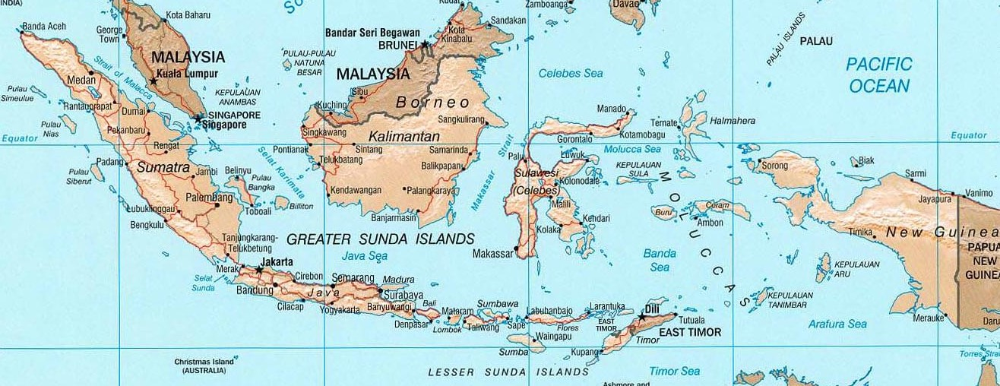
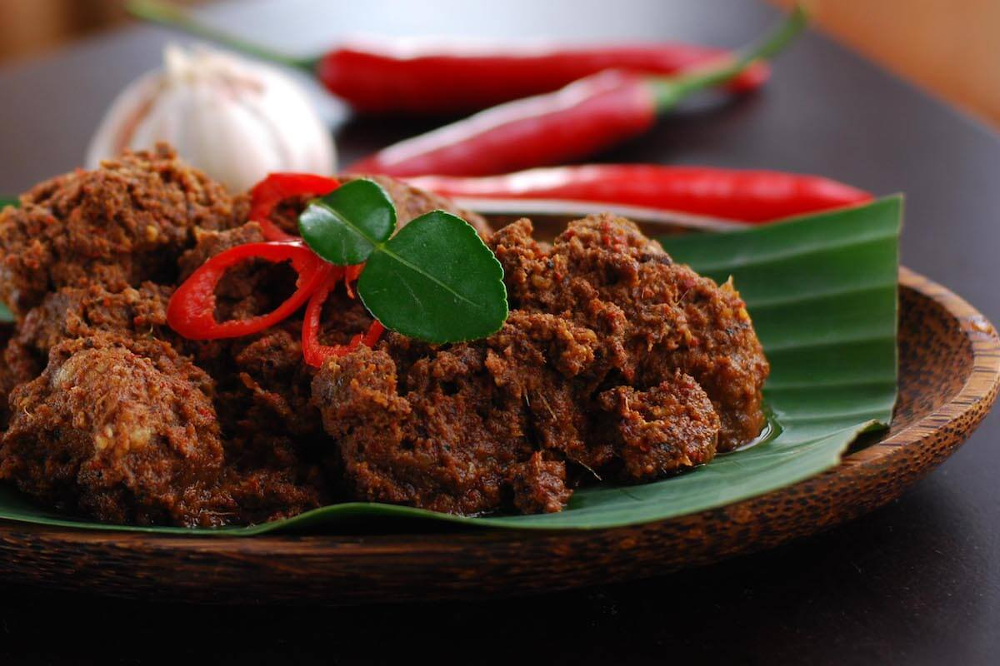
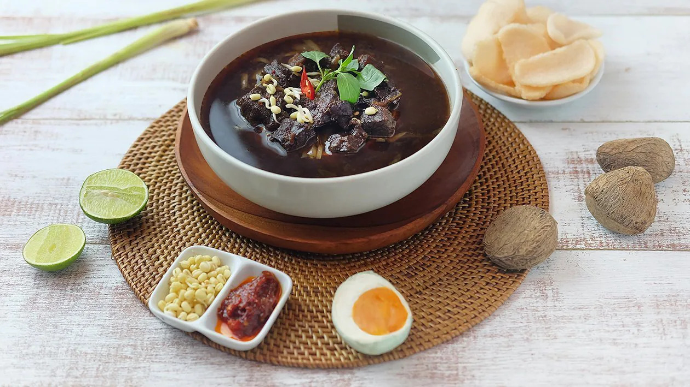
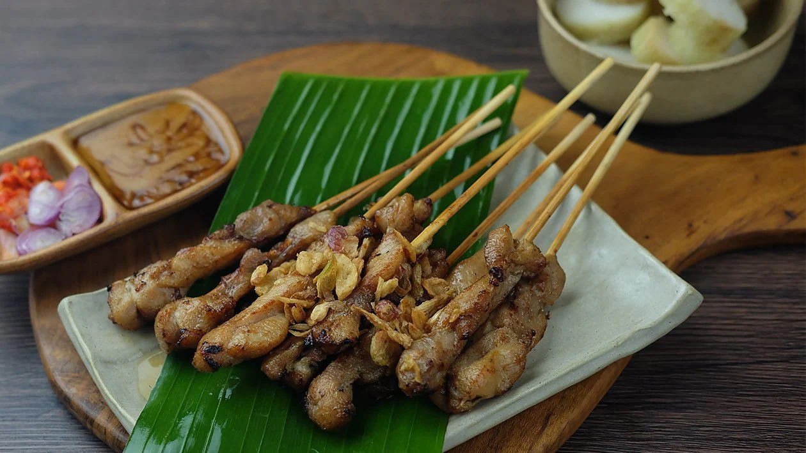
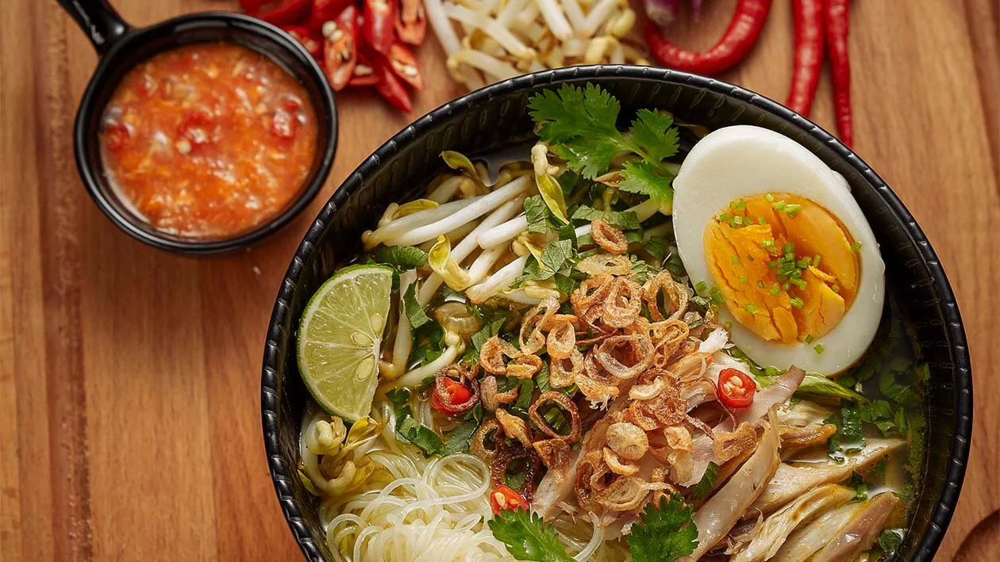

About Indonesia

Indonesia, disebut juga dengan Negara Kesatuan Republik Indonesia (NKRI, pengucapan bahasa Indonesia: [nəˈɡara kəsaˈt̪ua̯n reˈpublɪk in.ˈdo.nɛ.sja]); atau hanya Republik Indonesia (RI) adalah negara di Asia Tenggara yang dilintasi garis khatulistiwa dan berada di antara daratan benua Asia dan Australia, serta antara Samudra Pasifik dan Samudra Hindia. Indonesia adalah negara kepulauan terbesar di dunia yang terdiri dari 17.504 pulau. Nama alternatif yang biasa dipakai adalah Nusantara. Ibu kota negara Indonesia adalah Jakarta.
Dari Sabang di ujung Aceh sampai Merauke di tanah Papua, Indonesia terdiri dari berbagai suku bangsa, bahasa, dan agama. Berdasarkan rumpun bangsa (ras), Indonesia terdiri atas bangsa asli pribumi yakni Mongoloid Selatan/Austronesia dan Melanesia di mana bangsa Austronesia yang terbesar jumlahnya dan lebih banyak mendiami Indonesia bagian barat. Secara lebih spesifik, suku bangsa Jawa adalah suku bangsa terbesar dengan populasi mencapai 41,7% dari seluruh penduduk Indonesia.
Geographics

Indonesia adalah negara kepulauan di Asia Tenggara yang memiliki 17.504 pulau besar dan kecil, sekitar 6.000 di antaranya tidak berpenghuni, yang menyebar di sekitar khatulistiwa, yang memberikan cuaca tropis. Posisi Indonesia terletak pada koordinat 6°LU – 11°08'LS dan dari 95°'BT – 141°45'BT serta terletak di antara dua benua yaitu benua Asia dan benua Australia/Oseania.
Wilayah Indonesia terbentang sepanjang 3.977 mil di antara Samudra Hindia dan Samudra Pasifik. Luas daratan Indonesia adalah 1.922.570 km² dan luas perairannya 3.257.483 km². Pulau terpadat penduduknya adalah pulau Jawa, di mana setengah populasi Indonesia bermukim. Indonesia terdiri dari 5 pulau besar, yaitu: Jawa dengan luas 132.107 km², Sumatra dengan luas 473.606 km², Kalimantan dengan luas 539.460 km², Sulawesi dengan luas 189.216 km², dan Papua dengan luas 421.981 km². Batas wilayah Indonesia diukur dari kepulauan dengan menggunakan teritorial laut: 12 mil laut serta zona ekonomi eksklusif: 200 mil laut.
Wisata
Pemerintah Indonesia melalui Kementerian Pariwisata dan Ekonomi Kreatif tengah menggaungkan potensi pariwisata Tanah Air. Salah satu upayanya adalah dengan mempromosikan 5 destinasi super prioritas di Indonesia. Nah, 5 destinasi wisata super prioritas yang dicanangkan Kementerian Pariwisata dan Ekonomi Kreatif (Kemenparekraf) tersebut mencakup Borobudur, Danau Toba, Likupang, Mandalika, dan Labuan Bajo. Masing-masing destinasi itu memiliki pesona dan keunikannya masing-masing. Bila Anda belum sempat mengunjungi 5 destinasi super prioritas tersebut, tak ada salahnya menyiapkan rencananya sejak saat ini.
Borobudur

Borobudur (bahasa Jawa: ꦕꦤ꧀ꦝꦶꦧꦫꦧꦸꦝꦸꦂ, translit. Candhi Barabudhur) adalah sebuah candi Buddha yang terletak di Borobudur, Magelang, Jawa Tengah, Indonesia. Candi ini terletak kurang lebih 100 km di sebelah barat daya Semarang, 86 km di sebelah barat Surakarta, dan 40 km di sebelah barat laut Yogyakarta. Candi berbentuk stupa ini didirikan oleh para penganut agama Buddha Mahayana sekitar tahun 800-an Masehi pada masa pemerintahan wangsa Syailendra. Borobudur adalah candi atau kuil Buddha terbesar di dunia,sekaligus salah satu monumen Buddha terbesar di dunia.
Monumen ini terdiri atas enam teras berbentuk bujur sangkar yang di atasnya terdapat tiga pelataran melingkar, pada dindingnya dihiasi dengan 2.672 panel relief dan aslinya terdapat 504 arca Buddha. Borobudur memiliki koleksi relief Buddha terlengkap dan terbanyak di dunia. Stupa utama terbesar teletak di tengah sekaligus memahkotai bangunan ini, dikelilingi oleh tiga barisan melingkar 72 stupa berlubang yang di dalamnya terdapat arca Buddha tengah duduk bersila dalam posisi teratai sempurna dengan mudra (sikap tangan) Dharmachakra mudra (memutar roda dharma).
Danau Toba

Danau Toba adalah sebuah keajaiban alam yang sangat menakjubkan. Danau ini diperkirakan terbentuk dari letusan dahsyat sebuah gunung api, Gunung Toba, yang terjadi sekitar 74.000 tahun yang lalu. Dengan luas lebih dari 1.145 kilometer persegi dan kedalaman 450 meter, Danau Toba sebenarnya lebih mirip lautan daripada danau. Di tengah danau vulkanik terbesar di dunia ini juga terdapat sebuah pulau yang berukuran cukup besar, yaitu Pulau Samosir.
Danau Toba menjadi tempat yang sempurna untuk bersantai, karena udaranya sangat sejuk dan suasananya pun amat tenang. Tentu saja, sebab letak Danau Toba berada di 900 meter di atas permukaan laut. Selain panorama danau yang memukau, Sobat Pesona juga akan disuguhkan keindahan pemandangan deretan pegunungan dan pepohonan hijau yang menyegarkan mata. Pokoknya, cocok jadi tempat untuk melepas penat, deh!
Likupang

Likupang merupakan suatu kecamatan di Kabupaten Minahasa Utara, Sulawesi Utara. Luasnya sekitar 200 hektar, yang memiliki kawasan pesisir dengan pantai berpasir putih. Likupang pun sedang disiapkan untuk menjadi KEK (Kawasan Ekonomi Khusus) Pariwisata. Lokasinya cukup jauh dari Manado, ibu kota Provinsi Sulawesi Utara, sekitar 2 jam naik mobil.
KEK Likupang memiliki daya tarik pantai-pantai dengan pasir putih, di antaranya Tanjung Pulisan, Pantai Pall, dan savana yang luas. Juga, Pantai Sampirang dan ekowisata Bahoi. Pantai Pulisan belum lama dibuka, yakni mulai 2014. Kawasan KEK Likupang jarang penduduk. Di sana dihuni warga Nusa Utara dan Sangir Talaud. Dekat dengan Pulau Lihaga dan Pulau Gangga yang menjadi tempat snorkeling atau menyelam. Pantai Likupang memiliki spesies langka penyu hijau. Di sini juga menjadi habitat burung maleo dan makaka hitam
Mandalika

Di sepanjang pantai selatan pulau Lombok yang indah terbentang hamparan pantai pasir putih yang panjang dan lebar menghadap ke Samudera Hindia yang berkilauan. Di latar belakang adalah perbukitan hijau subur dan pemandangan memesona. Ini adalah Mandalika, yang dulunya sangat dirahasiakan oleh para peselancar, sekarang telah muncul sebagai ibu kota rekreasi di pulau itu. Mandalika meneriakkan surga dari semua sudutnya yang mempesona. Zona ekonomi pariwisata khusus menawarkan bar dan klub malam yang semarak, sirkuit balap yang mendebarkan, taman air yang mengasyikkan, hotel dan resor mewah, lapangan golf yang mempesona, spa yang meremajakan, dan banyak lagi; ada segalanya untuk semua orang di surga seluas 1.250 hektar ini. Industri pariwisata di Mandalika menyamai pulau tetangganya, Bali. Mandalika juga merupakan tempat meleburnya wisatawan dari berbagai belahan dunia. Di sini, industri pariwisata menyatu dengan budaya masyarakat lokal yang unik dan penuh warna yang masih terpelihara dengan baik dari generasi ke generasi.
Mandalika juga berlokasi dekat dengan beberapa pantai paling terkenal di Lombok. Ini termasuk Tanjung Aan, Kuta, Gerupuk, Serenting, dan Pantai Seger. Dari atas Bukit Merese dan Pantai Batu Payung, Anda disuguhkan beberapa panorama Lombok yang paling menakjubkan. Segala macam aktivitas olahraga air yang menyenangkan menanti di Pantai Kuta. Bagi yang suka berenang, berselancar, dan memancing dapat menuju ke Pantai Gerupuk, sedangkan yang menyukai kedamaian dan ketenangan dapat menuju ke Pantai Serenting. Untuk pengalaman budaya yang unik, pergilah ke Pantai Seger selama tradisi tahunan Ritual Bau Nyale dan bergabunglah dalam kemeriahan lokal yang tidak akan Anda temukan di tempat lain.

Labuan Bajo adalah kota nelayan yang terletak di ujung barat pulau besar Flores di wilayah Nusa Tenggara timur Indonesia. Ini adalah ibu kota Kabupaten Manggarai Barat (Kabupaten Manggarai Barat), salah satu dari delapan kabupaten yang merupakan pembagian administratif utama Flores. Dulunya merupakan desa nelayan kecil, Labuan Bajo (juga dieja Labuhanbajo dan Labuanbajo) kini menjadi pusat wisata sekaligus pusat pemerintahan bagi wilayah sekitarnya. Fasilitas untuk mendukung kegiatan wisata berkembang pesat meskipun peningkatan pesat jumlah pengunjung menimbulkan beberapa tekanan pada lingkungan setempat.Labuan Bajo adalah pintu gerbang untuk perjalanan melintasi Taman Nasional Komodo terdekat ke Pulau Komodo dan Pulau Rinca, keduanya merupakan rumah bagi komodo yang terkenal. Ada banyak titik snorkling di pulau-pulau yang dekat dengan Labuan Bajo. Kepulauan Kanawa dan Seraya, misalnya, menawarkan tempat menyelam dan snorkeling yang bagus. Arus bisa kuat di beberapa lokasi, jadi perlu hati-hati. Setiap sore di Pulau Kalong, di sebelah selatan Labuan Bajo, ribuan kelelawar flying fox (dikenal sebagai burung kalong dalam bahasa Indonesia) memberikan tampilan yang menakjubkan.
Sekitar senja kelelawar bangkit dari hutan bakau di sekitar Pulau Kalong dan dalam beberapa menit, sebuah kolom mulai terbentuk ketika ribuan kelelawar mulai melintasi ke pulau utama Flores di sebelah timur. Semakin banyak kelelawar bergabung dengan kolom itu mungkin sekitar 30 menit berikutnya. Kolom segera membentuk jejak luar biasa melintasi langit yang membentang bermil-mil saat kelelawar terbang ke timur ke Flores untuk mencari makanan di hutan terdekat.Fitur lain di dekat Labuan Bajo termasuk beberapa air terjun, fasilitas trekking, dan banyak pantai yang beragam. Kota ini cukup kecil dan dapat dengan mudah dilalui dengan berjalan kaki dalam waktu 15 menit atau lebih. Gua batu cermin (Batu cermin gua) hanya berjarak 4 km. Ada berbagai gereja dan masjid yang menarik. Ojek (Rp 3.000-5.000) dan bemo lewat setiap lima menit. Seseorang dapat menyewa sepeda motor seharga Rp 75.000 (sekitar $US 5) per hari. Saat ini (Januari 2019) banyak ATM di sekitar kota dan jalan utama sudah diaspal. Menuju ke timur dari Labuan Bajo, seseorang dapat melakukan perjalanan melalui jalan darat (bus atau mobil) ke kota-kota lain di seluruh Flores seperti Ruteng, Bajawa, Ende dan Maumere.
Kuliner
Rendang

Rendang atau randang (Jawi: رندڠ) adalah masakan daging asli Indonesia yang berasal dari Minangkabau. Masakan ini dihasilkan dari proses memasak suhu rendah dalam waktu lama menggunakan aneka rempah-rempah dan santan. Proses memasaknya memakan waktu berjam-jam (biasanya sekitar empat jam) hingga yang tinggal hanyalah potongan daging berwarna hitam pekat dan dedak. Dalam suhu ruangan, rendang dapat bertahan hingga berminggu-minggu. Rendang yang dimasak dalam waktu yang lebih singkat dan santannya belum mengering disebut kalio, berwarna cokelat terang keemasan. Rendang dapat dijumpai di Rumah Makan Padang di seluruh dunia. Masakan ini populer di Indonesia dan negara-negara Asia Tenggara lainnya, seperti Malaysia, Singapura, Brunei, Filipina dan Thailand. Di daerah asalnya, Minangkabau, rendang disajikan di berbagai upacara adat dan perhelatan istimewa. Meskipun rendang merupakan masakan tradisional Minangkabau, teknik memasak serta pilihan dan penggunaan bumbu rendang berbeda-berda menurut daerah.
Rawon

Rawon adalah masakan Indonesia berupa sup daging berkuah hitam dengan campuran bumbu khas yang menggunakan kluwek. Rawon, meskipun dikenal sebagai masakan khas Jawa Timur (daerah Arekan), dikenal pula oleh masyarakat Jawa Tengah sebelah timur (daerah Surakarta). Daging untuk rawon umumnya adalah daging sapi yang dipotong kecil-kecil, utamanya adalah bagian sandung lamur. Bumbu supnya sangat khas Indonesia, yaitu campuran bawang merah, bawang putih, lengkuas (laos), ketumbar, kemiri, serai, kunir, cabai, kluwek, garam, serta minyak nabati. Semua bahan ini dihaluskan, lalu ditumis sampai harum. Campuran bumbu ini kemudian dimasukkan dalam kaldu rebusan daging bersama-sama dengan daging. Warna gelap khas rawon berasal dari kluwek. Di luar negeri, rawon disebut sebagai black soup. Rawon disajikan bersama nasi, dilengkapi dengan tauge berekor pendek, telur asin, daun bawang, kerupuk udang, daging sapi goreng (empal), dan sambal. Beberapa pelengkap lain yang juga dapat dihidangkan bersama rawon adalah olahan jeroan dan di daerah Pasuruan rawon juga lazim dikonsumsi dengan mendol (perkedel tempe) dan disajikan di atas daun pisang. Kunci lezat rawon juga berada pada olahan kuahnya yang berasal dari kaldu daging yang digunakan, baik dari lemak daging, tulang muda, maupun kulit.
Sate

Sate atau satai adalah makanan yang terbuat dari daging yang dipotong kecil-kecil dan ditusuk sedemikian rupa dengan tusukan lidi tulang daun kelapa atau bambu, kemudian dipanggang menggunakan bara arang kayu. Sate disajikan dengan berbagai macam bumbu yang bergantung pada variasi resep sate.[1] Daging yang dijadikan sate antara lain daging ayam, kambing, domba, sapi, babi, kelinci, kuda, dan lain-lain.
Sate diketahui berasal dari Jawa, Indonesia, dan dapat ditemukan di mana saja di Indonesia dan telah dianggap sebagai salah satu masakan nasional Indonesia.[2] Sate juga populer di negara-negara Asia Tenggara lainnya seperti Malaysia, Singapura, Filipina, dan Thailand. Sate juga populer di Belanda karena dipengaruhi masakan Indonesia yang dulu merupakan koloninya.
Sate adalah hidangan yang sangat populer di Indonesia; dengan berbagai suku bangsa dan tradisi seni memasak (lihat Masakan Indonesia) telah menghasilkan berbagai jenis sate. Di Indonesia, sate dapat diperoleh dari pedagang sate keliling, pedagang kaki lima di warung tepi jalan, hingga di restoran kelas atas, serta kerap disajikan dalam pesta dan kenduri. Resep dan cara pembuatan sate beraneka ragam bergantung variasi dan resep masing-masing daerah. Hampir segala jenis daging dapat dibuat sate. Sebagai negara asal mula sate, Indonesia memiliki variasi resep sate yang kaya.
Biasanya sate diberi saus, bisa berupa bumbu kecap, bumbu kacang, atau yang lainnya, biasanya disertai acar dari irisan bawang merah, mentimun, dan cabai rawit. Sate dimakan dengan nasi hangat atau bisa juga disajikan dengan lontong atau ketupat.
Soto

Soto, sroto, sauto, tauto, atau coto adalah makanan khas Indonesia seperti sop yang terbuat dari kaldu daging dan sayuran. Daging yang paling sering digunakan adalah daging sapi dan ayam, tetapi ada pula yang menggunakan daging babi atau kambing. Berbagai daerah di Indonesia memiliki soto khas daerahnya masing-masing dengan komposisi yang berbeda-beda, misalnya soto Madura, soto Kediri, soto Pemalang, soto Lamongan, soto Jepara, soto Semarang, soto Kudus, soto Betawi, soto Padang, soto Bandung, sroto Sokaraja, soto Banjar, soto Medan, dan coto Makassar. Soto juga diberi nama sesuai isinya, misalnya soto ayam, soto babat, atau soto kambing. Ada pula soto yang dibuat dari daging kaki sapi yang disebut dengan soto sekengkel.
Cara penyajian soto berbeda-beda sesuai kekhasan di setiap daerah. Soto biasa dihidangkan dengan nasi, lontong, ketupat, mi, atau bihun. Untuk menambah kenikmatan soto, biasanya juga disertai berbagai macam lauk, misalnya kerupuk, perkedel, emping, sambal, dan sambal kacang. Ada pula yang menambahkan telur puyuh, sate kerang, jeruk limau, berbagai macam gorengan (tempe, tahu, bakwan) dan koya.
Gado-Gado

Gado-gado adalah salah satu makanan khas yang berasal dari Jakarta, Indonesia yang berupa sayur-sayuran yang direbus dan dicampur jadi satu, dengan bumbu kacang atau saus dari kacang tanah dan yang dihaluskan disertai irisan telur dan pada umumnya banyak yang menambahkan kentang rebus yang sudah dihaluskan untuk dicampur bumbu kacang, kentang rebus dimasak bersama dengan bumbu kacang kemudian di atasnya ditaburi bawang goreng. Sedikit emping goreng atau kerupuk (ada juga yang memakai kerupuk udang) juga ditambahkan.
Gado-gado dapat dimakan begitu saja seperti salad dengan bumbu/saus kacang, tetapi juga dapat dimakan beserta nasi putih atau kadang-kadang juga disajikan dengan lontong.
Adanya makanan Gado-gado bermula kesultanan Mataram yang dipimpin Sultan Agung melakukan Penyerbuan di Batavia kehabisan pasokan bahan makanan terutama beras, selain itu lumbung-lumbung beras di sekitar Batavia dibakar oleh VOC, sehingga membuat perajurit warok dari Ponorogo yang tergabung dalam pasukan perang membuat sambal bumbu pecel dari kacang, kemudian disiramkan ke berbagai sayuran mentah yang ada di sekitar persawahan untuk bertahan hidup. Tindakan ini dalam bahasa jawa disebut Gado yang berarti makan hanya lauk saja atau makan lauk tanpa nasi, apa yang dilakukan oleh warok ini diikuti oleh prajurit lainnya untuk memakan sayur seadanya yang disiram sairan bumbu pecel. Dengan perkembangan zaman, kini gado-gado ditambahkan lontong yang diiris kecil, telur dan kerupuk yang disajikan di warung kecil hingga restoran.